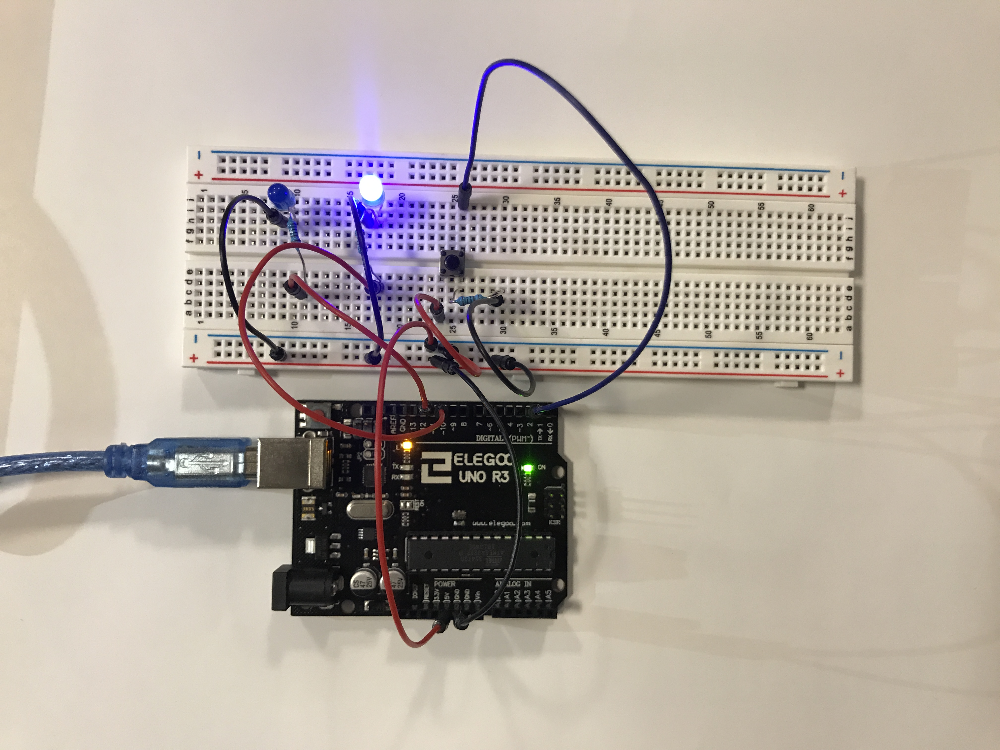

Pari Gabriel's Assignment 2!
Here is all the documentation for assignment 2.
 Circuit
 Schematic
Schematic
 Calculations for the minimum resistance necessary for the different circuit components.
Calculations for the minimum resistance necessary for the different circuit components.
 The circuit in action.
The circuit in action.
const int buttonPin = 2; // the number of the pushbutton pin
const int ledPin = 11; // the number of the LED pin
int buttonState = 0; // variable for reading the pushbutton status
int led = 10; // the PWM pin the LED is attached to
int brightness = 0; // how bright the LED is
int fadeAmount = 5; // how many points to fade the LED by
void setup() {
// initialize the LED pin as an output:
pinMode(ledPin, OUTPUT);
// initialize the pushbutton pin as an input:
pinMode(buttonPin, INPUT);
// declare pin 10 to be an output:
pinMode(led, OUTPUT);
}
void loop() {
// fade in from min to max in increments of 5 points:
for (int fadeValue = 0 ; fadeValue <= 255; fadeValue += 5) {
// sets the value (range from 0 to 255):
analogWrite(ledPin, fadeValue);
// wait for 30 milliseconds to see the dimming effect
delay(30);
}
// fade out from max to min in increments of 5 points:
for (int fadeValue = 255 ; fadeValue >= 0; fadeValue -= 5) {
// sets the value (range from 0 to 255):
analogWrite(ledPin, fadeValue);
// wait for 30 milliseconds to see the dimming effect
delay(30);
}
// read the state of the pushbutton value:
buttonState = digitalRead(buttonPin);
// check if the pushbutton is pressed. If it is, the buttonState is HIGH:
if (buttonState == HIGH) {
// turn LED on:
digitalWrite(ledPin, HIGH);
} else {
// turn LED off:
digitalWrite(ledPin, LOW);
}
}
The code snippet.